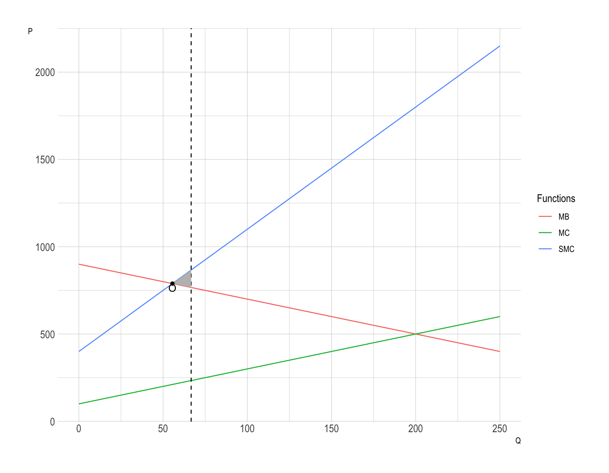
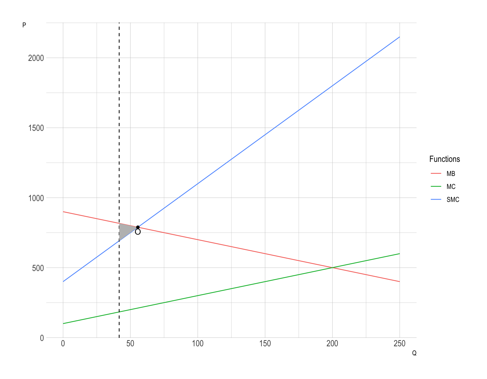

Price vs. Quantity under Uncertainty
Classwork 5
Suppose that the (external) damage done by polluting goods \(Q\) is known to be \(MD = 300 + 5Q\), and the (private) cost and benefit are given by \(MC = 100 + 2Q\) and \(MB = D_{0} - 2Q\), where \(D_{0}\) is not precisely known.
Q1a.
If \(D_{0} = 1,000\), what would be the optimal quantity? What tax would be necessary in order for that to be the equilibrium quantity?
Answer:
Setting \(MB = MC + MD\) gives
\[ 1000 - 2Q = (100 + 2Q) + (300 + 5Q) \] Therefore, \(Q^{gov} = \frac{200}{3} = 66 + \frac{2}{3}\).
The tax that will result in the socially optimal level of pollution is set so that \(t^{*} = MD(Q^{*}) = 300 + 5Q^{*} = \frac{1900}{3} = 633 + \frac{1}{3}\).
Q1b.
Suppose that, based on the result from Q1a, a cap-and-trade system is imposed to allow the optimal quantity of pollution to be produced. If \(D_{0} = 900\), what would be the deadweight loss associated with having the wrong quantity?
Answer:
Setting \(MB = MC + MD\) gives
\[ 900 - 2Q = (100 + 2Q) + (300 + 5Q) \] Therefore, \(Q^{o} = \frac{500}{9} = 55 + \frac{5}{9}\), which is less than \(Q^{gov}\).
SMC represents the marginal social cost, which is MC + MD.
The DWL is: \[ \begin{align} DWL_{q} &= \frac{1}{2}\times (1000 - 900) \times \left(\frac{200}{3} - \frac{500}{9}\right)\\ &= \frac{5000}{9} \end{align} \]
Q1c.
Suppose that, based on the result from part Q1a, a tax is imposed to allow the optimal quantity of pollution to be produced. If \(D_{0} = 900\), what would be the deadweight loss associated with having the wrong tax level?
Answer:
Given \(t = \frac{1900}{3}\) from Q1a, the firm will set \(MB = MC + t\):
\[ 900 - 2Q = 100 + 2Q + \frac{1900}{3}. \]
Therefore, \(Q^{gov-t} = \frac{125}{3} = 41 + \frac{2}{3}\), which is less than \(Q^{o}\).

The DWL is: \[
\begin{align}
DWL_{p} &= \frac{1}{2}\times \left(900 - 2\frac{125}{3} - \left(400 + 7\frac{125}{3}\right)\right) \times \left(\frac{500}{9} - \frac{125}{3}\right)\\
&= \frac{1}{2}\times 125 \times \frac{125}{9}\\
&= \frac{5^6}{2\times3^{2}}
\end{align}
\]
Q1d.
If \(D_{0}\) is not exactly known, which is likely to give better results, a cap-and-trade system or a tax? What would be the answer to this question if the marginal damage were \(300 + 3Q\) instead of \(300 + 5Q\)?
Answer:
If you try other values for \(D_{0}\), you will find that the DWL is always higher for the tax than cap-and-trade, except when \(D_{0} = 1,000\).
Because the marginal damage varies so much with quantity, the correct level for the tax is more sensitive to \(D_{0}\) than the correct amount of pollution to allow is.
If marginal damages are \(MD = 300 + 3Q\), the situation reverses; in that situation, marginal damages vary less with quantity and can be more precisely estimated than the correct quantity can.
The Market for GHG Emission Reduction: The Case of Climate Change
Reducing greenhouse gas (GHG) emissions addresses two distinct aspects: the stock of GHGs accumulated in the atmosphere over time and the flow of emissions released in the short term.

Stock of GHGs: The stock of GHGs represents the cumulative concentration of greenhouse gases, such as CO₂, in the atmosphere. It is this stock that drives long-term climate impacts, contributing to global warming and climate change. The benefits of emission reductions are associated with limiting this stock, as reducing the atmospheric concentration of GHGs mitigates climate risks and long-term environmental impacts. Importantly, the marginal benefits of emission reductions are relatively insensitive to short-term fluctuations in the flow of emissions. This is because benefits largely accrue from lowering the total stock over an extended period.
Flow of GHG Emissions: On the other hand, the costs of emissions reductions are closely tied to the flow, or the rate at which emissions are reduced. This flow depends on the current level of emissions output from industries, transportation, and other sectors. Reducing emissions flow—especially in a short timeframe—can be costly, as it often requires rapid changes in technology, infrastructure, or energy sources. Consequently, marginal costs are highly sensitive to the current level of reductions, rising steeply as greater reductions are implemented.